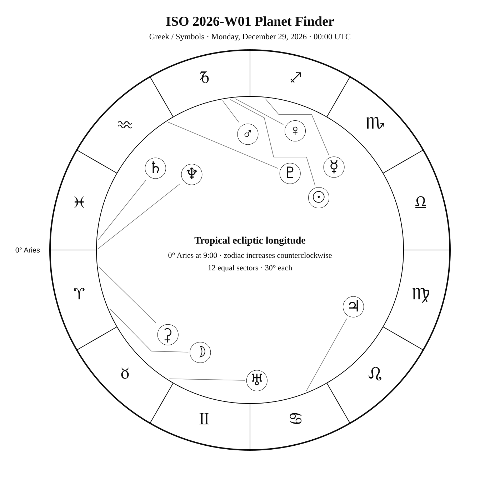
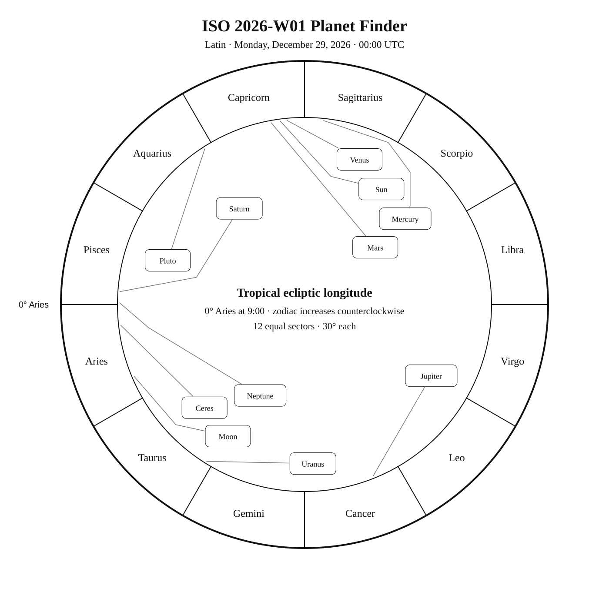
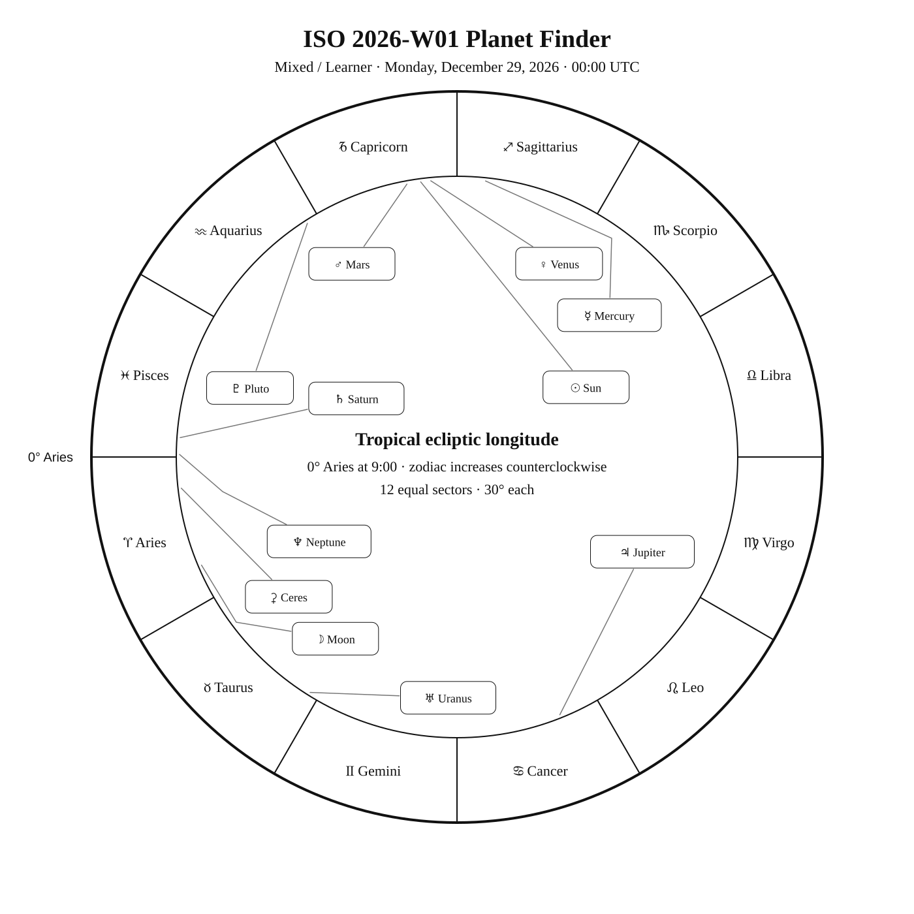

ISO 2026-W01
Week begins: Monday, December 29, 2025
Calendar
| Date | Zodiac day | Events |
|---|---|---|
| Mon, Dec 29, 2025 | ♑ 9 | |
| Tue, Dec 30, 2025 | ♑ 10 | |
| Wed, Dec 31, 2025 | ♑ 11 | |
| Thu, Jan 1, 2026 | ♑ 12 | β Ret —  4 3.8 — Southern Winter 4 3.8 — Southern WinterM45 —  2 1.6 — Northern Winter 2 1.6 — Northern Winter |
| Fri, Jan 2, 2026 | ♑ 13 | |
| Sat, Jan 3, 2026 | ♑ 14 | 🌕 Full Moon · Moon After Yule — 10:02:55 UTC |
| Sun, Jan 4, 2026 | ♑ 15 |
Weekly Solar-System Ephemeris
Snapshot: Week begins December 29, 2025, 00:00 UTC.
(-90° to +90°; defaults +45°, 21:00 LAT)
| Body | ☉︎ | ☽︎ | ☿︎ | ♀︎ | ♂︎ | ♃︎ | ♄︎ |
|---|---|---|---|---|---|---|---|
| Ecliptic | ♑︎ 7°31′ β +0°00′ | ♈︎ 22°56′ β +3°23′ | ♐︎ 24°06′ β −0°14′ | ♑︎ 5°26′ β −0°23′ | ♑︎ 10°24′ β −0°52′ | ♋︎ 21°45′ β +0°14′ | ♓︎ 26°00′ β −2°16′ |
| Observing |  |  -10.8 -10.8 | ☉︎ | ☉︎ | ☉︎ | -2.7 | 1.0 |
| Rise | 07:36 | 11:55 | 06:41 | 07:31 | 07:54 | 17:23 | 11:29 |
| Set | 16:24 | 01:39 | 15:22 | 16:11 | 16:31 | 08:40 | 23:04 |
Extended targets:
| Body | ⚳︎ | ♅︎ | ♆︎ | ♇︎ |
|---|---|---|---|---|
| Ecliptic | ♈︎ 6°27′ β −9°05′ | ♉︎ 28°02′ β −0°12′ | ♓︎ 29°28′ β −1°20′ | ♒︎ 2°38′ β −3°46′ |
| Observing | 8.9 | 5.6 | 7.8 | 14.6 |
| Rise | 12:26 | 13:44 | 11:31 | 09:29 |
| Set | 23:45 | 04:37 | 23:25 | 18:12 |
β = ecliptic latitude (+ north, − south).
Rise and set are Local Apparent Time for the selected latitude.
Naked-eye observing uses the Sun’s altitude at the selected Monday observer time: Daylight (Sun ≥ −0.833°), Civil twilight (−0.833° to −6°), Nautical twilight (−6° to −12°), Astronomical twilight (−12° to −18°), and Night (below −18°).
Solar Glare identifies a body too close to the Sun when the sky-state rule does not already supersede its naked-eye classification.
The Sun’s observing status uses this same five-state sky classification.
Planet Finder



Sky Notes
Kilroy: Sky Notes · generated 2026-10-09 00:33:23 UTC
ISO 2026-W01 runs from December 29 through January 4. To find Mars, first identify Sagittarius, trace the Teapot of Sagittarius, and locate Nunki in that pattern. Mars lies about 2.0° away in ecliptic longitude at the Monday 00:00 UTC snapshot; use the finder to transfer from Nunki to the planet. Saturn and Neptune are separated by about 3.5° in geocentric ecliptic longitude at the Monday 00:00 UTC snapshot.


Naked eye: 🌕 Full Moon · Moon After Yule — 10:02:55 UTC. Bright moonlight favors prominent stars and planets while reducing contrast on faint deep-sky objects. No fixed-sky Calendar object is classified for naked-eye observing this week.

Planets: Moon: Naked eye; magnitude -10.8; direct motion; 63.4% illuminated. Monday 00:00 UTC snapshot. Opposition in ecliptic longitude Jan 03 10:02 UTC. Conjunction with Jupiter in ecliptic longitude Jan 03 22:54 UTC. Conjunction with Uranus in ecliptic longitude Dec 31 09:56 UTC. Mercury: In solar glare; magnitude -0.5; direct motion; 93.3% illuminated. Monday 00:00 UTC snapshot. Venus: In solar glare; magnitude -3.9; direct motion; 99.9% illuminated. Monday 00:00 UTC snapshot. Mars: In solar glare; magnitude 1.1; direct motion; 100.0% illuminated. Monday 00:00 UTC snapshot. Ceres: Telescope; magnitude 8.9; direct motion; 97.0% illuminated. Monday 00:00 UTC snapshot. Jupiter: Naked eye; magnitude -2.7; retrograde motion; 99.9% illuminated. Monday 00:00 UTC snapshot. Conjunction with Moon in ecliptic longitude Jan 03 22:54 UTC. Saturn: Naked eye; magnitude 1.0; direct motion; 99.7% illuminated. Monday 00:00 UTC snapshot. Uranus: Binoculars; magnitude 5.6; retrograde motion; 100.0% illuminated. Monday 00:00 UTC snapshot. Conjunction with Moon in ecliptic longitude Dec 31 09:56 UTC. Neptune: Telescope; magnitude 7.8; direct motion; 100.0% illuminated. Monday 00:00 UTC snapshot. Pluto: Substantial telescope; magnitude 14.6; direct motion; 100.0% illuminated. Below the horizon at 21:00 local apparent solar time, 45°N. Monday 00:00 UTC snapshot.


Binoculars: Trace Reticulum’s diamond-shaped figure in the finder, then identify β Ret at its charted position.
Small telescope: Concentrate on Pleiades. Increase magnification only after the target and surrounding pattern are secure.
Substantial telescope: No fixed-sky Calendar object is classified as requiring a substantial telescope this week.
Other objects listed this week: None
Mercury
Mercury: in solar glare at the Monday 00:00 UTC snapshot. Rises 06:41; sets 15:22 (45°N, local apparent solar time). Visual magnitude -0.5. The disk is 93.3% illuminated (gibbous). It is 13.4° from the Sun, on its west side. Motion is direct at 1.507° per day in ecliptic longitude at the snapshot. Position reference: Sabik, 9.4° away. Mercury: 9.4° from Sabik in the Pathfinder.
Venus
Venus: in solar glare at the Monday 00:00 UTC snapshot. Rises 07:31; sets 16:11 (45°N, local apparent solar time). Visual magnitude -3.9. The disk is 99.9% illuminated (nearly full). It is 2.1° from the Sun, on its west side. Motion is direct at 1.258° per day in ecliptic longitude at the snapshot. Position reference: Nunki, 7.9° away. Mars is 5.0° away at the snapshot. Venus: 7.9° from Nunki in the Pathfinder.
Moon
Moon: naked eye at the Monday 00:00 UTC snapshot. At 45°N and 21:00 local apparent solar time, it is 46.5° above the horizon. Rises 11:55; sets 01:39 (45°N, local apparent solar time). Visual magnitude -10.8. The disk is 63.4% illuminated (waxing gibbous). It is 105.4° from the Sun, on its east side. Motion is direct at 14.084° per day in ecliptic longitude at the snapshot. Position reference: Sheratan, 12.4° away. Opposition in ecliptic longitude Jan 03 10:02 UTC. Conjunction with Jupiter in ecliptic longitude Jan 03 22:54 UTC. Conjunction with Uranus in ecliptic longitude Dec 31 09:56 UTC. Moon: 12.4° from Sheratan in the Pathfinder.
Mars
Mars: in solar glare at the Monday 00:00 UTC snapshot. Rises 07:54; sets 16:31 (45°N, local apparent solar time). Visual magnitude 1.1. The disk is 100.0% illuminated (nearly full). It is 3.0° from the Sun, on its east side. Motion is direct at 0.764° per day in ecliptic longitude at the snapshot. Position reference: Nunki, 3.5° away. Venus is 5.0° away at the snapshot. Mars: 3.5° from Nunki in the Pathfinder.
Jupiter
Jupiter: naked eye at the Monday 00:00 UTC snapshot. At 45°N and 21:00 local apparent solar time, it is 36.1° above the horizon. Rises 17:23; sets 08:40 (45°N, local apparent solar time). Visual magnitude -2.7. The disk is 99.9% illuminated (nearly full). It is 165.8° from the Sun, on its west side. Motion is retrograde at 0.127° per day in ecliptic longitude at the snapshot. Position reference: Pollux, 6.7° away. Conjunction with Moon in ecliptic longitude Jan 03 22:54 UTC. Jupiter: 6.7° from Pollux in the Pathfinder.
Saturn
Saturn: naked eye at the Monday 00:00 UTC snapshot. At 45°N and 21:00 local apparent solar time, it is 20.4° above the horizon. Rises 11:29; sets 23:04 (45°N, local apparent solar time). Visual magnitude 1.0. The disk is 99.7% illuminated (nearly full). It is 78.5° from the Sun, on its east side. Motion is direct at 0.054° per day in ecliptic longitude at the snapshot. Position reference: Fumalsamakah, 13.3° away. Neptune is 3.6° away at the snapshot. Saturn: 13.3° from Fumalsamakah in the Pathfinder.
Uranus
Uranus: binoculars at the Monday 00:00 UTC snapshot. At 45°N and 21:00 local apparent solar time, it is 64.3° above the horizon. Rises 13:44; sets 04:37 (45°N, local apparent solar time). Visual magnitude 5.6. The disk is 100.0% illuminated (nearly full). It is 140.5° from the Sun, on its east side. Motion is retrograde at 0.029° per day in ecliptic longitude at the snapshot. Position reference: Aldebaran, 13.2° away. Conjunction with Moon in ecliptic longitude Dec 31 09:56 UTC. Uranus: 13.2° from Aldebaran in the Pathfinder.
Neptune
Neptune: telescope at the Monday 00:00 UTC snapshot. At 45°N and 21:00 local apparent solar time, it is 23.9° above the horizon. Rises 11:31; sets 23:25 (45°N, local apparent solar time). Visual magnitude 7.8. The disk is 100.0% illuminated (nearly full). It is 82.0° from the Sun, on its east side. Motion is direct at 0.011° per day in ecliptic longitude at the snapshot. Position reference: Fumalsamakah, 14.8° away. Saturn is 3.6° away at the snapshot. Neptune: 14.8° from Fumalsamakah in the Pathfinder.
Ceres
Ceres: telescope at the Monday 00:00 UTC snapshot. At 45°N and 21:00 local apparent solar time, it is 25.9° above the horizon. Rises 12:26; sets 23:45 (45°N, local apparent solar time). Visual magnitude 8.9. The disk is 97.0% illuminated (gibbous). It is 89.0° from the Sun, on its east side. Motion is direct at 0.200° per day in ecliptic longitude at the snapshot. Position reference: Diphda, 12.2° away. Ceres: 12.2° from Diphda in the Pathfinder.
Pluto
Pluto: substantial telescope at the Monday 00:00 UTC snapshot. At 45°N and 21:00 local apparent solar time, it is 28.3° below the horizon. Rises 09:29; sets 18:12 (45°N, local apparent solar time). Visual magnitude 14.6. The disk is 100.0% illuminated (nearly full). It is 25.4° from the Sun, on its east side. Motion is direct at 0.029° per day in ecliptic longitude at the snapshot. Position reference: Dabih, 8.5° away. Pluto: 8.5° from Dabih in the Pathfinder.
Highlights
Mercury
In solar glare; magnitude -0.5; direct motion; 93.3% illuminated. Monday 00:00 UTC snapshot. Mercury: 9.4° from Sabik in the Pathfinder.
Venus
In solar glare; magnitude -3.9; direct motion; 99.9% illuminated. Monday 00:00 UTC snapshot. Venus: 7.9° from Nunki in the Pathfinder.
Moon
Naked eye; magnitude -10.8; direct motion; 63.4% illuminated. Monday 00:00 UTC snapshot. Opposition in ecliptic longitude Jan 03 10:02 UTC. Conjunction with Jupiter in ecliptic longitude Jan 03 22:54 UTC. Conjunction with Uranus in ecliptic longitude Dec 31 09:56 UTC. Moon: 12.4° from Sheratan in the Pathfinder.
Mars
In solar glare; magnitude 1.1; direct motion; 100.0% illuminated. Monday 00:00 UTC snapshot. Mars: 3.5° from Nunki in the Pathfinder.
Jupiter
Naked eye; magnitude -2.7; retrograde motion; 99.9% illuminated. Monday 00:00 UTC snapshot. Conjunction with Moon in ecliptic longitude Jan 03 22:54 UTC. Jupiter: 6.7° from Pollux in the Pathfinder.
Saturn
Naked eye; magnitude 1.0; direct motion; 99.7% illuminated. Monday 00:00 UTC snapshot. Saturn: 13.3° from Fumalsamakah in the Pathfinder.
Uranus
Binoculars; magnitude 5.6; retrograde motion; 100.0% illuminated. Monday 00:00 UTC snapshot. Conjunction with Moon in ecliptic longitude Dec 31 09:56 UTC. Uranus: 13.2° from Aldebaran in the Pathfinder.
Neptune
Telescope; magnitude 7.8; direct motion; 100.0% illuminated. Monday 00:00 UTC snapshot. Neptune: 14.8° from Fumalsamakah in the Pathfinder.
Ceres
Telescope; magnitude 8.9; direct motion; 97.0% illuminated. Monday 00:00 UTC snapshot. Ceres: 12.2° from Diphda in the Pathfinder.
Pluto
Substantial telescope; magnitude 14.6; direct motion; 100.0% illuminated. Below the horizon at 21:00 local apparent solar time, 45°N. Monday 00:00 UTC snapshot. Pluto: 8.5° from Dabih in the Pathfinder.